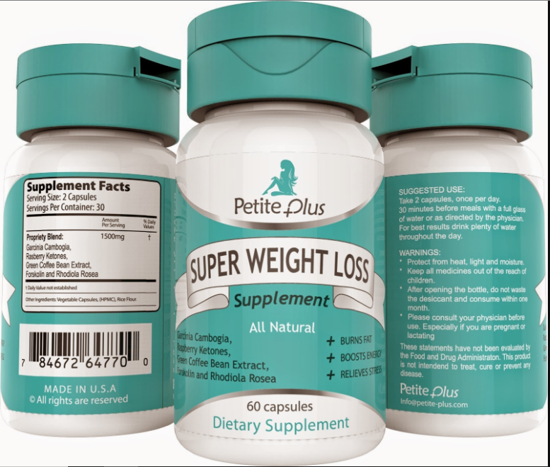

Medical Misinformation
By Farouk Omar
Medical Fraud
There is a lot of medical misinformation out there on the internet, and some of it is weight loss frauds.
Many humans are too lazy to go out and do exercise. Instead, they believe in miracle cures, thinking that some pills will help them lose weight. From Buzzfeednews.com: “As Americans resolve to lose weight and diet this year, scammers are at the ready to collect what amounts to hundreds of millions each year in products that swear to trim inches and cut pounds, usually without any exercise.”
There are some diet pills that do work, and some that do not work. For example, “pills, in which blue capsules burn fat and red one's block calories.” Buzzfeednews.com These pills say that they make you lose weight and burn calories, but they do not.
They had to pay so much money because of their fraud. The FTC (Federal Trade Commission) stopped their business immediately. “While this direct mail advertising campaign took place between 2012 and October 2013, Manon Fernet and her Quebec-based company agreed to pay $500,000 to settle FTC charges this year over their Double Shot pills.” Buzzfeednews.com
Here is one way to tell the difference between fake and real medicine: If they say words like, “Magical.” or “Overnight.” It is a fraud. Nothing ever comes that easy.
Like this: “Lobster-inspired slimming creams. A magical powder you can sprinkle on food to help curb your appetite. A supplement that will get you high school skinny.” Buzzfeednews.com
Gray Areas
Some pills contain ingredients that have not yet been reviewed by medical journals and are not sold by pharmacists. “Alternative” medicines, like arnica, are like this. These may still be helpful, but they are not worth paying much for, or trusting.
The alternative health supplement market makes a great deal of money for companies that market their products. These companies will create many different websites that include positive reviews and make it seem like experts and pill-takers alike agree that the pills work well. But no matter how many websites tell you to buy something, it should be considered medical misinformation unless medical scientists in peer-reviewed journals document the health effects.
BIO-X4 from Nucific is an example of this kind of medical misinformation. An article from, Fitnessclone.com says, “BIO-X4 is a 4-in-1 weight management supplement and probiotic. The supplement is named “BIO-X4” after its four key health benefits.
According to posted reviews of people dressed like doctors, and many users on its own and many other sites like DietSpotlight.com, Fitnessclone.com, and WellnessWarrior.com and DietsInReview.com, BIO-X4 helps with weight loss and even digestive problems. But the product is not sold in pharmacies, because it is not an approved medicine. It is a classic example of medical misinformation.
“While there is plenty to read about Bio-X4, all the information resides within a certain bubble. There are no medical studies examining the weight loss claims, no credentialed medical experts weighing in on the ingredients. Few major retailers or pharmacy chains are selling it. No well-known health sites have reviewed it.” (Prevention.com)
One of the ingredients in Nucific is green tea. Green tea sounds like a healthy thing to drink. The Chinese drink green tea, and Chinese medicine has many health effects that have not been recognized by western medicine. That does not mean it does not work. But until our scientists isolate the ingredients that are helpful and prove that they work, we should not spend our money to have it put into capsules. Just drink it as tea. and hope.
From Nucific, reviews of BIO-X4
⭐⭐⭐⭐⭐
Lost weight, feel great, tons of energy!
“Skeptical at first, I decided to jump in and give this product a try for 30 days. I was astonished that within the first 10 days I was sleeping better, waking up refreshed and had much less of an appetite! My sweet tooth was gone completely in the first two weeks and now that I have been taking it for 2+ months I have noticed a huge decrease in not just the amount of food I eat but I am able to choose foods that are healthier for me instead of giving in to the unhealthy food choices I was making before.”
Author not listed